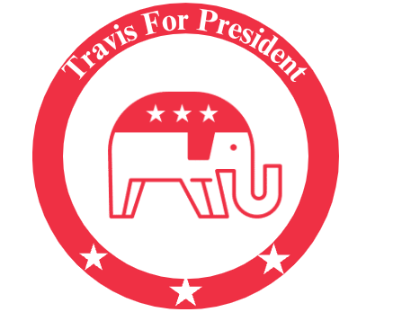
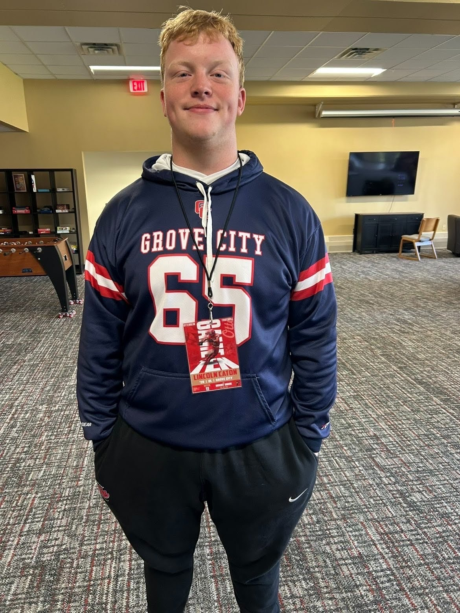

↕ Scroll or drag to explore photo
FOR PRESIDENTTravis
Travis
Hudkins
Head of the Government Club. Our campaign highlights Travis's leadership experience and commitment to conservative principles, safety, and opportunity.

ZERO PERIOD CONSERVATIVESFreedom. Responsibility. Opportunity. A vision rooted in individual rights, strong communities, and a government that serves the people.
We believe people should have the freedom to make their own choices—and the responsibility to be accountable for them.
The Zero Period Conservative Party stands for individual freedom, personal responsibility, traditional values, and limited government. We support a strong economy, secure communities, constitutional rights, and opportunities for people to succeed.
Our goal is to protect the nation's values, support families, and promote a future in which every American has the opportunity to thrive.
This website presents the positions of our school campaign as described in our campaign plan.
The team at the center of our campaign.
Head of the Government Club. Our campaign highlights Travis's leadership experience and commitment to conservative principles, safety, and opportunity.

↕ Scroll or drag to explore photoVarsity football player and campaign strategist. Our campaign emphasizes Lincoln's teamwork, dedication, and collaborative leadership.
Protect constitutional rights and allow people to make choices without unnecessary government interference.
Promote accountability and the freedom to pursue personal goals.
Support job creation, small businesses, and policies that encourage economic growth.
Prioritize public safety, family values, education, and opportunities to succeed.
Explore the policies and reasoning set out in our campaign platform.
Propose a freeze on non-essential federal regulations, approve domestic oil and gas permits, and increase border-security personnel and infrastructure.
Introduce tax-relief and fiscal-discipline proposals, alongside an audit to identify non-essential federal spending.
Pursue support for state-level school choice, reduce federal education mandates, and propose federal anti-crime support for local police.
Proposes reductions to individual income, corporate, and capital gains taxes.
Proposes easing energy infrastructure permits and rolling back carbon pricing and green-energy mandates.
Proposes funding for border barriers, Border Patrol staffing, and local police grants.
Proposes tax-credit scholarships for private, charter, and alternative education.
Proposes removing two existing regulations for every new federal regulation.